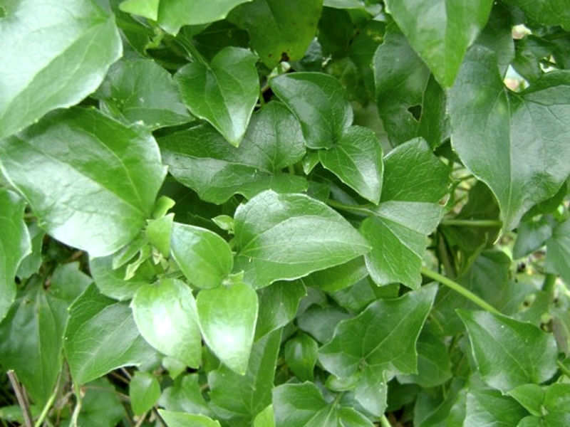

Guaco (Mikania laevigata)
Visualização 3D
Carregando modelo 3D...
Iniciando...
Gire o modelo com o mouse e use a rodinha para zoom
Sinônimos
- Guaco-de-cheiro
- Erva-de-cobra
- Coração-de-Jesus
- Guaco-do-mato
- Mikania glomerata (espécie similar)
Descrição da Planta
- Hábito: Subarbusto/liana perene
- Caule:
- Cilíndrico e ramificado
- Lenhoso e glabro
- Cor: castanho-acinzentado (velho) a verde-claro (novo)
- Folhas:
- Opostas, oblongo-lanceoladas
- Face superior verde-escura e brilhante
- Aromáticas (cheiro doce característico)
- 3-5 nervuras principais
- Flores:
- Brancas e carnosas
- Dispostas em glomérulos
Para Que Serve
- Usos tradicionais:
- Doenças respiratórias (tosse, bronquite, asma)
- Picadas de cobra (uso andino)
- Reumatismo e nevralgias
- Ações farmacológicas:
- Broncodilatadora
- Expectorante e mucolítica
- Anti-inflamatória
- Antimicrobiana
- Antialérgica suave
Como Usar
Infusão (Chá)
- Água fervente sobre folhas secas
- Abafar por 5-10 minutos
- Coe e beba imediatamente
Dose: 150mL, 2 vezes/dia (acima de 12 anos)
Xarope Caseiro
- 20 folhas frescas picadas
- 150mL água + 255g açúcar
- Cozinhar em fogo brando por 5min (tampado)
- Coe, acrescente açúcar e dissolva
- Armazenar em vidro âmbar na geladeira
Dosagem:
- 3-6 anos: 5mL (1 col. chá) 2x/dia
- 7-12 anos: 10mL (1 col. sobremesa) 3x/dia
- Acima 12 anos: 15mL (1 col. sopa) 3x/dia
Validade: 7 dias refrigerado
Tintura
- 1-3mL, 3 vezes/dia (adultos)
- 1-3 gotas/kg/dia (crianças)
Cuidados e Contraindicações
- Contraindicações:
- Grávidas e lactantes
- Crianças menores de 1 ano
- Diabéticos (para xarope com açúcar)
- Pacientes com distúrbios hemorrágicos
- Usuários de anticoagulantes
- Efeitos adversos:
- Vômitos e diarreia (em excesso)
- Taquicardia (especialmente em bebês)
- Hemorragias (uso prolongado)
- Interações:
- Anticoagulantes (aumenta risco hemorrágico)
- Antibióticos (tetraciclinas, penicilina)
Cultivo
- Propagação: Estacas de caule (preferencial) ou sementes
- Solo: Arenoso e úmido
- Adaptação: Cresce em solos degradados (regenera o solo)
- Distribuição: Sul/Sudeste do Brasil (matas ciliares)
- Curiosidade: Atrai abelhas melíferas na floração
Curiosidades
- Principal composto ativo: Cumarina (aroma de baunilha)
- Mecanismo de ação: Bloqueia receptores de acetilcolina (broncodilatação)
- Saponinas fluidificam o muco (ação expectorante)
- Usado desde 1927 no Brasil para problemas pulmonares
- M. laevigata e M. glomerata são usadas indistintamente
Composição Química
- Principais ativos:
- Cumarina (volátil - aroma característico)
- Saponinas (guacina)
- Ácidos cafeoilquínicos
- Lupeol (anti-inflamatório)
- Óleos essenciais:
- Outros: Taninos, flavonoides, estigmasterol
Referências
- Cartilha SUS Campinas (2018)
- Revista Brasileira de Farmacognosia (2010)
- Fitoterapia Brasil (2023)
- Formulário de Fitoterápicos - ANVISA (2011)
Monografia Científica
Baixar PDF Completo
Estudo detalhado pela UNICAMP - Departamento de Farmacognosia
Voltar para Catálogo